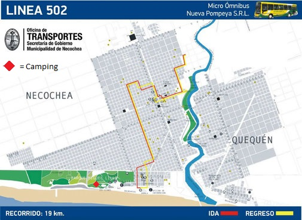
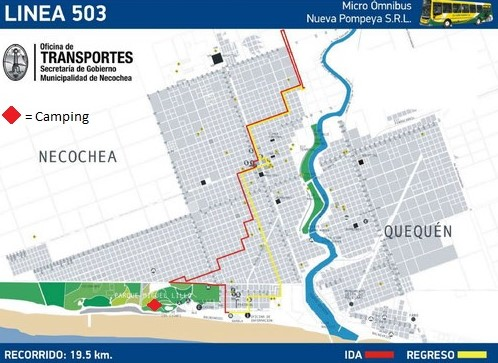
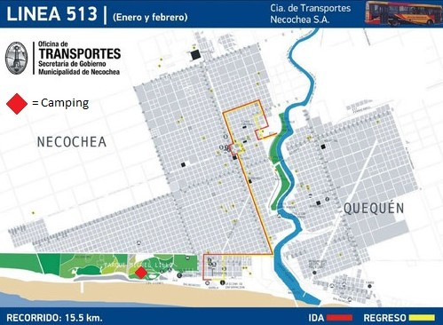
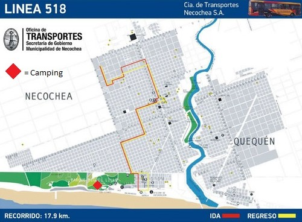
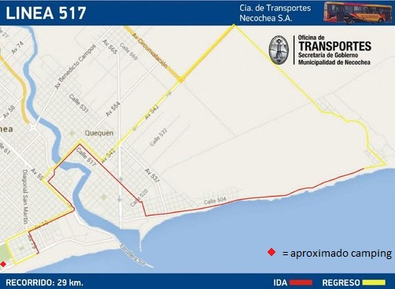
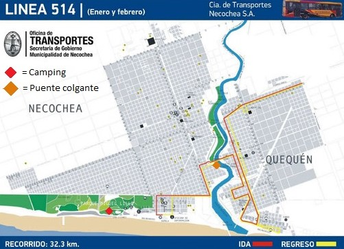

Recorrido de la terminal al camping:
Información especifica de colectivos:
Colectivos a el centro:




Colectivos a Quequen:


Remises:
Remisses Unica

Remisse 504
Remises 26
Remis Jensen
Remises Juan Libo 24 Hs Comodidad y Confianza
Remis Alas